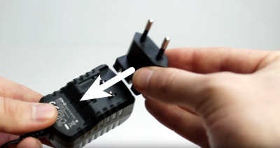
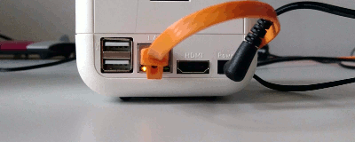
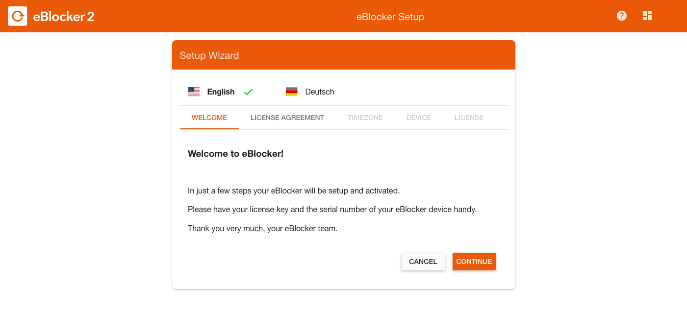
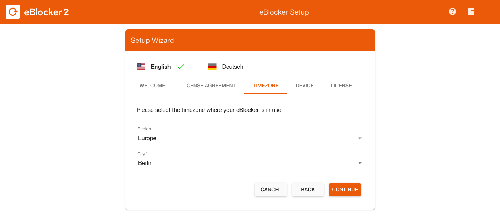
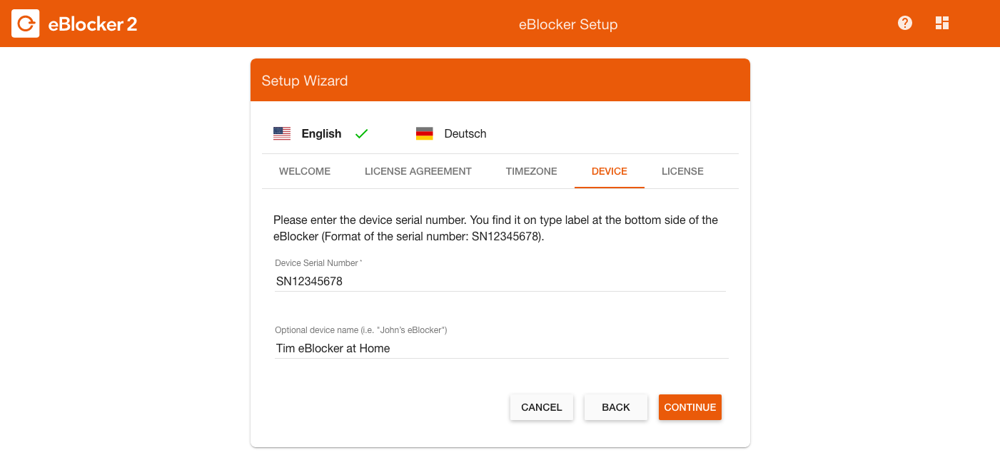

Deutsch | English
If you have the eBlocker packaging in front of you, please open the seal of the packaging with a sharp object first. Now open the packaging and remove the contents from the box.
You should have unpacked the following:
Connect the orange LAN cable first to your router and then to the eBlocker. If you hear a "click" while connecting, the cable is properly connected between the router and eBlocker.
Tip:
If you connect the eBlocker to your router, avoid LAN port number 4 on your router. The LAN port number 4 could be configured as LAN guest access on your router. In this case, the eBlocker cannot be activated on this LAN port for your network. In addition, first remove all WLAN repeaters from the network. Ideally, each of your devices should be able to access the Internet at least once via the eBlocker without repeaters and powerlines.
Now unpack the power supply and select the appropriate attachment for your country. Slide the attachment onto the power supply until you hear a "click".

Now connect the power supply to the eBlocker and after a few seconds the two LEDs on the LAN port of the eBlocker will light up or flash. The eBlocker now starts its operating system, it takes about 5 minutes.

For a smooth setup of the eBlocker we recommend to use a computer that is directly connected to your network via LAN cable. After about 5 minutes, start your Internet browser and go to the eblocker.box website. You will now see the so-called eBlocker Dashboard. On the Dashboard you will see a card called "Settings". Click here on "Activate" to activate your eBlocker. You can also click the "Go to settings" link on the card.

As an alternative, you can also open setup.eblocker.com in your browser. You will then see the Welcome screen. Click here on "Activate license" to activate your eBlocker. You can also click on the link "Settings".
The Setup Wizard will now guide you through the activation process.
Accept the license agreement.
 Now select your time zone in which you live.
Now select your time zone in which you live.

Now you will ask for the eBlocker serial number, which you will find on the bottom of the eBlocker. Give the eBlocker a name.

Then enter the license key and your mail address with which you want to activate the eBlocker license.

The eBlocker confirms the successful activation and will then automatically search for an update. If an update to a new eBlockerOS version is available, it will be downloaded and installed automatically. An update can take up to 10 minutes. Please wait until the eBlocker has installed the update.
Older eBlocker versions do not automatically ask for an update after successful activation. Go to eBlocker Settings > General Menu > Update tab and perform a manual update. If you do not see an update button, automatic updates are already activated. Click the slider to disable automatic updates.
Congratulations, you have now connected and activated your eBlocker. Restart all active devices in your network or disconnect the LAN or WLAN connection of the active devices for a few seconds.
Good to know:
After the activation, your devices are protected by the eBlocker's domain blockers. The eBlocker now automatically blocks cookies that collect data or other elements that identify you from entering your browser. Without the eBlocker, however, your browser has probably already collected numerous tracking cookies from various providers. We therefore recommend that you first delete all cookies so that these trackers "lose their track".